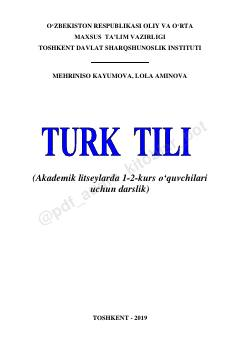

TTAkademik litsey o'quvchilari uchun turk tili darsligi va grammatika qo'llanmasi.
Mazkur darslik akademik litseylarning 1-2-kurs o'quvchilari uchun turk tilini o'rganishga mo'ljallangan bo'lib, fonetika, grammatik qoidalar, matnlar va lug'atlarni o'z ichiga oladi. Qo'llanma mustaqil o'rganuvchilar va soha mutaxassislari uchun ham amaliy yordamchi bo'la oladi. Undagi mavzular soddadan murakkabga qarab tuzilgan bo'lib, o'quvchilarning so'z boyligi va muloqot madaniyatini oshirishga xizmat qiladi.